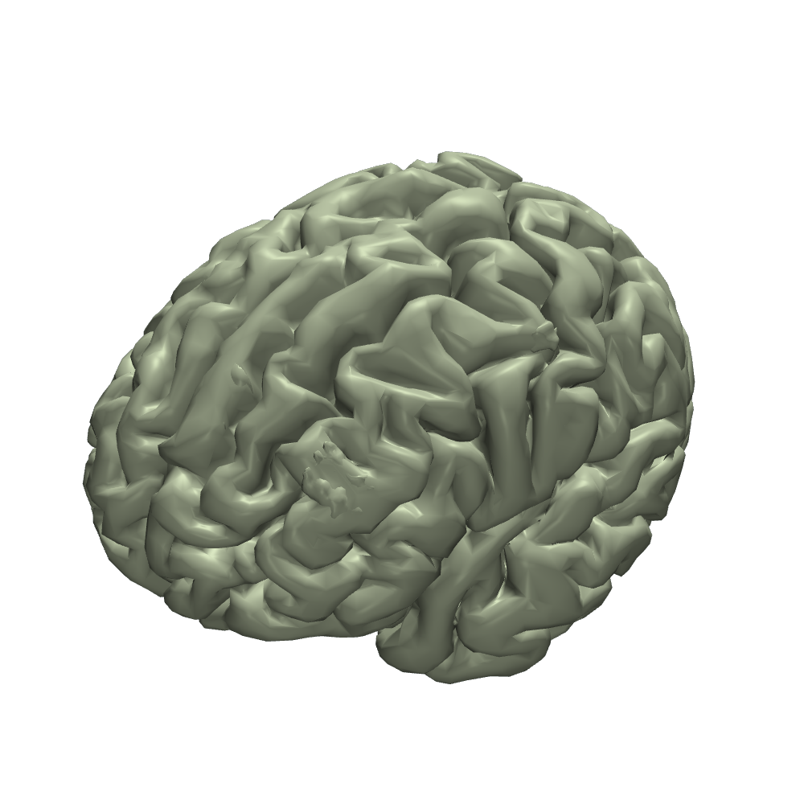
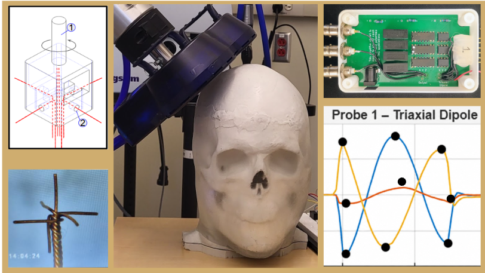
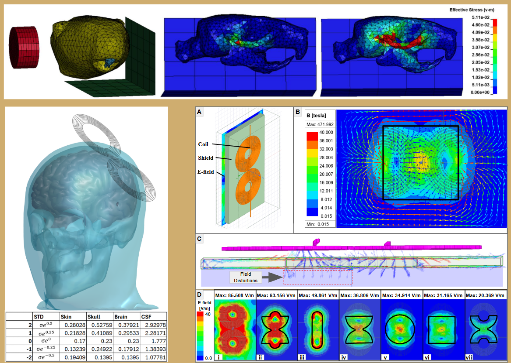
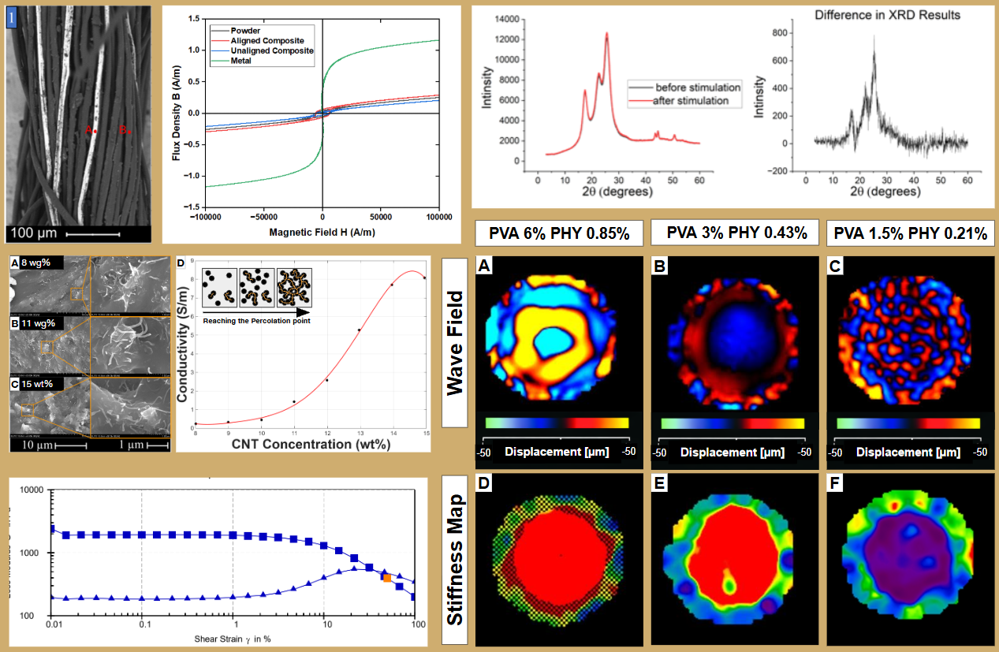
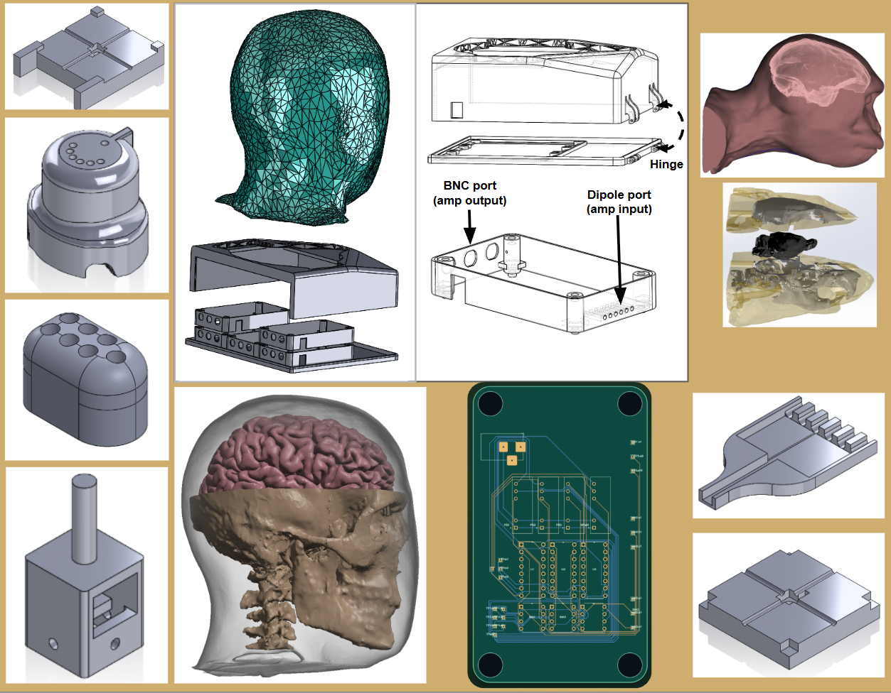

Expertise in developing
medical hardware,
simulations, and
material science.
My work connects neuroanatomy, electrical instrumentation, mechanical design, and materials engineering. I design experimental devices around the demands of the measurement—not the other way around.

Selected work, under the surface.
Browse the major areas of my engineering practice. Each collection opens with interactive technical material and continues into focused projects.
Development of the TMS Phantom
Phantom-based measurements of electric fields induced by transcranial magnetic stimulation.
Explore the work ↗
Simulations
Electrical and mechanical modeling: Sim4Life, SimNIBS, Ansys Maxwell, and engineering analysis.
Explore the work ↗
Material Characterization
SEM, XRD, rheometry, and magnetic resonance elastography.
Explore the work ↗
Computer Aided Design
SolidWorks, Meshmixer, Blender, KiCad, and anatomical reconstruction.
Explore the work ↗
Design is part of the experiment.
A trustworthy measurement depends on more than the sensing element. The geometry around a probe, its wiring, the mechanical connectors, the material boundary conditions, and the acquisition circuit all influence the result.
I work across those interfaces with clinicians, scientists, and engineers to turn experimental problems into hardware that can be built, tested, and used.